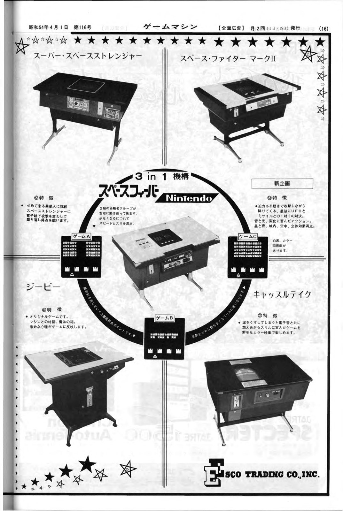
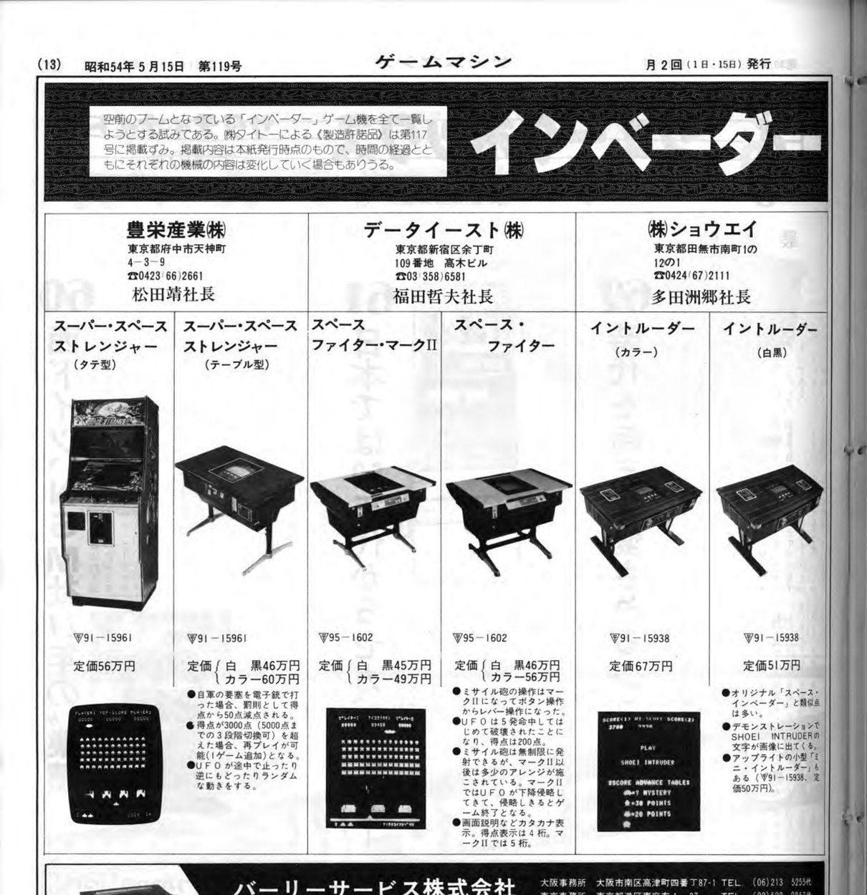
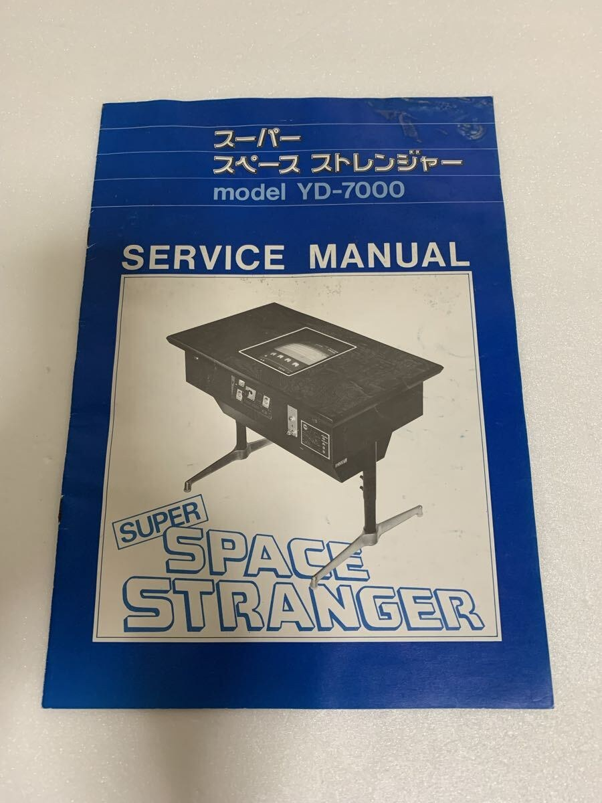
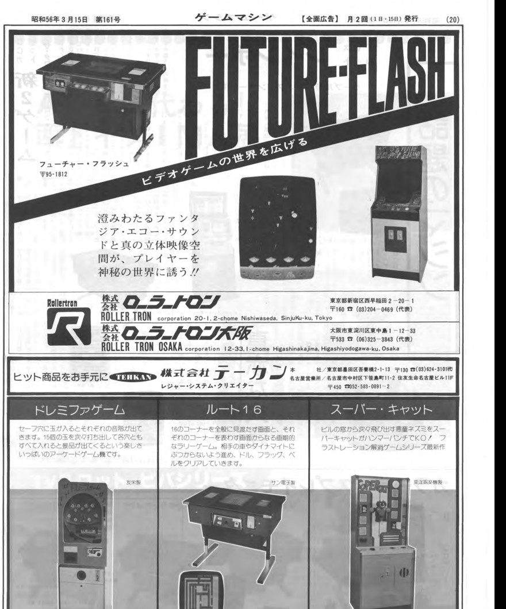
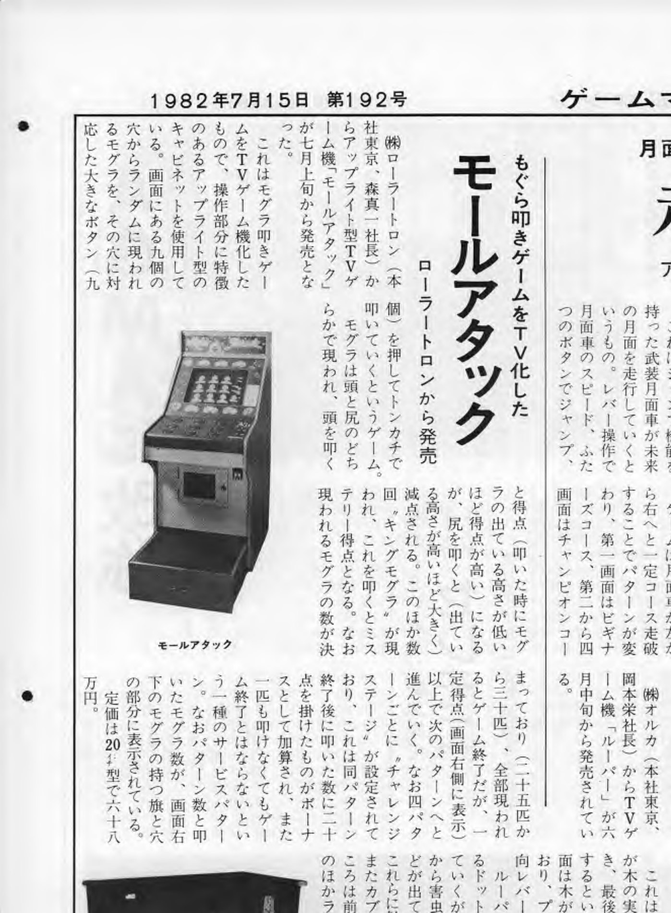
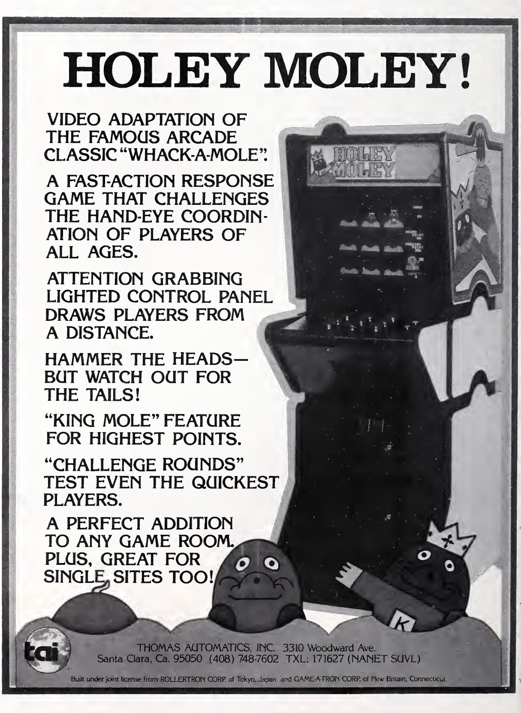
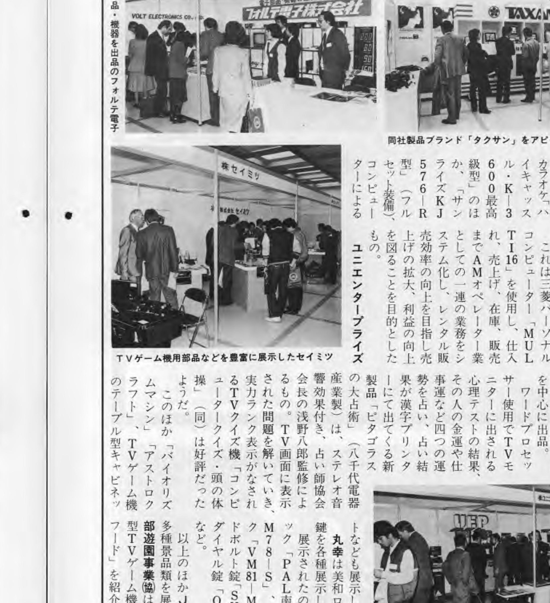
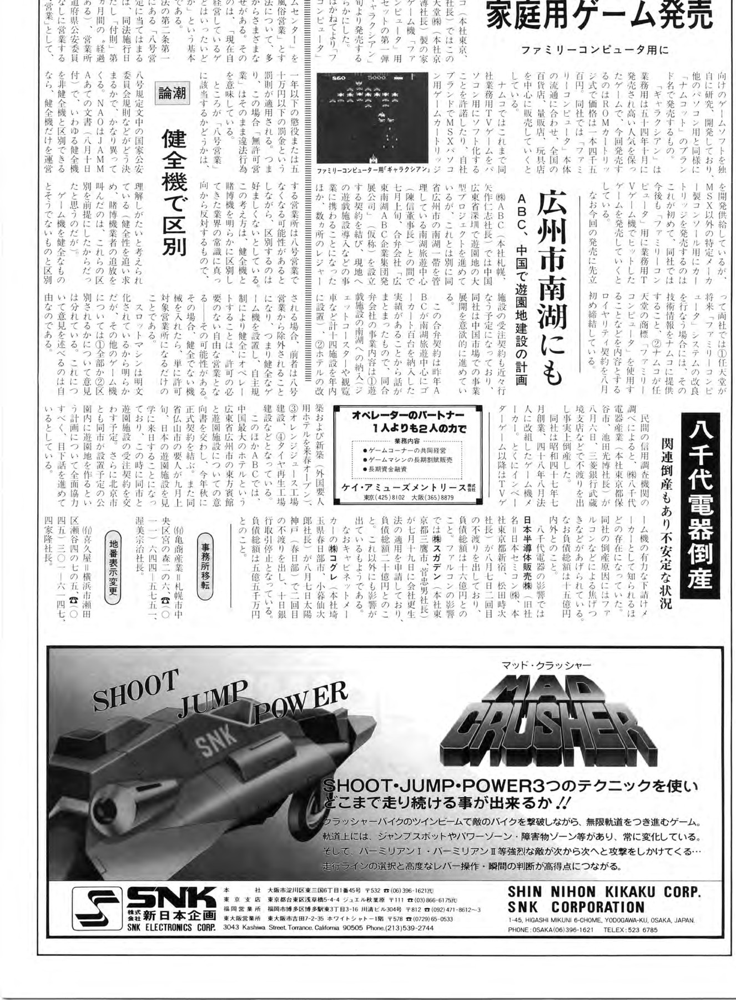

Company snapshot
| Field | Documented information |
|---|---|
| Company name | Yachiyo Electronics; Japanese legal name in the surviving court record: 株式会社八千代電器産業 |
| English corporate wording | Yachiyo Electric Co., Ltd. is verified on a surviving Janputer identification plate; it should not automatically be treated as the company’s universal official English legal name |
| Reported start of operations | July 1972 |
| Reported incorporation / reorganization | August 1973 |
| Effective operational and financial collapse | August 1984, after dishonored paper on August 6 |
| Formal legal dissolution | Unknown; no dissolution, liquidation, bankruptcy judgment, creditor schedule, or asset-sale record has been recovered |
| Approximate operating span | About 12 years, measured from the reported July 1972 start to the August 1984 collapse |
| Arcade output | Yachiyo helped create three game families. Its manufacturing and assembly work brings the list to six arcade products. Two further releases in the Atama no Taisou quiz line may bring it to eight, though Yachiyo’s part in those remains less clear. |
The numbers above need explanation. Yachiyo was not a conventional arcade software house whose catalog can be counted simply by looking for its name on title screens. The surviving evidence shows a company that manufactured electronics, built or assembled machines for other sellers, participated technically in game programs, and worked inside a network of Japanese amusement companies whose public-facing names often differed from the companies that actually built the hardware. For that reason, the most misleading possible summary would be “Yachiyo developed six games.” The evidence does not support that formulation.
The distinction between designing a game, manufacturing its hardware and selling the finished machine is essential to this history. Several titles involve different companies at each stage, and unresolved relationships are identified in the account that follows.
1. Identity, offices, leadership, and the shape of the company
The Japanese corporate name recorded in the court transcription is 株式会社八千代電器産業. A surviving court-record transcription identifies the corporation by that name and provides the strongest current legal and corporate evidence for Yachiyo’s identity.1 The often-used English rendering “Yachiyo Denki Sangyo Co., Ltd.” is a reasonable literal translation, but no surviving official English registration has been recovered. The wording “Yachiyo Electric Co., Ltd.” is physically verified on a Janputer GP-010T identification plate. That is important evidence of English-language usage by or for Yachiyo, but it is evidence for that product plate, not proof that the same wording was the company’s universal legal English name.
Contemporary reporting on Yachiyo’s 1984 failure gives July 1972 as the start of operations and August 1973 as incorporation or reorganization. These are reported dates; the original corporate registration has not been recovered. 2
The court record places the earlier registered office at 1-12-1 Minamicho, Tanashi, Tokyo, and records its move to 2-12-20 Fujicho, Hoya, Tokyo on June 17, 1978. Both are verified corporate addresses, but their use as factories, assembly sites, administrative offices or mixed premises remains unknown. 3
The same record identifies Mitsuhiro Ikeda (池田光博) as representative director and as the person exercising overall control of Yachiyo’s business operations. The recorded capital was ¥5 million, and the company’s stated purpose included the manufacture and sale of electronic equipment.4 The surviving evidence does not establish the full shareholder structure, the ownership percentages, or whether Ikeda owned a controlling equity stake in addition to his executive control.
Three other names are relevant but must be kept in narrower roles. Yasushi Matsuda appears as a Hoei Sangyo representative in contemporary material and as an evidentiary figure in the Yachiyo tax case; no evidence currently makes him a Yachiyo officer or shareholder. Kiyoji Musashi appears as inventor on a late Yachiyo-assigned utility-model filing, but his job title and amusement-game role are unknown. Tsuyoshi Ikeda is relevant to the HAL Laboratory chronology because he succeeded Mitsuhiro Ikeda as HAL president in March 1984; no direct Yachiyo executive role has been established for him.
The Hoei relationship
Yachiyo’s relationship with Hoei Sangyo is central to understanding why the company’s own name is often less visible than its physical involvement. The court record says that Yachiyo followed a policy of entrusting product sales to Hoei.5 Contemporary trade material also places Hoei at Yachiyo’s former Tanashi address after Yachiyo moved to Hoya. Together, those facts support a close operational relationship and a possible reuse of the premises. They do not establish common ownership, a parent-subsidiary structure, or legal identity between the companies.
Hoei itself was established in April 1977, reportedly with capital of ¥5 million, and was renamed Coreland Technology in June 1982.6 That chronology matters because one recurring historical story has treated Coreland as though it were created after Yachiyo collapsed in order to succeed it. It was not. Coreland already existed under that name two years before Yachiyo failed. If assets, staff, designs, contracts, inventory, or know-how ever moved from Yachiyo to Coreland, the transfer would have been into an existing company. No such transfer has yet been proved.
The evidence therefore supports a strong Yachiyo-Hoei operating relationship, but it stops short of legal succession or shared ownership. That distinction remains important throughout the game catalog: a Hoei-branded or Hoei-sold machine may still contain Yachiyo-manufactured hardware, while a Yachiyo-manufactured machine need not have been marketed publicly under Yachiyo’s name.
2. The Invader boom and the tax case
Yachiyo’s most revealing surviving corporate document is not an arcade advertisement but a tax-criminal judgment. The court transcription describes the company as manufacturing amusement equipment, including Invader games, and says the sudden Invader boom produced profits beyond expectations.7 That is unusually strong evidence that arcade manufacturing was economically significant to Yachiyo at the exact historical moment when the Space Stranger family appeared.
For the fiscal year ending March 31, 1979, the court record gives approximately ¥496.9 million in actual income, roughly ¥156 million in concealed income, and about ¥64.7 million in corporate tax evasion. It records a ¥20 million fine for the company and a one-year sentence for Mitsuhiro Ikeda, suspended for three years.8 Those figures have to be handled carefully. “Income” in a tax case is not the same thing as gross sales, production volume, company valuation, or arcade revenue. The record shows the scale of the tax case and the financial importance of the Invader boom; it does not provide a unit count for machines or a clean sales figure.
The tax case also strengthens the Hoei connection because the case narrative discusses Yachiyo’s practice of entrusting sales to Hoei. It does not, however, solve the exact division of engineering, program development, cabinet manufacture, ownership of game rights, or distribution for every product. Those roles still have to be reconstructed game by game.
3. Space Stranger: Yachiyo’s best-documented arcade family
The Space Stranger family is the strongest place to see Yachiyo’s mixed identity as manufacturer, engineer, and behind-the-scenes arcade participant. The surviving record contains period advertising, trade listings, boards, manuals, schematics, operator sheets, regional survivors, and modern preservation work. It also contains enough conflicting names to demonstrate why a simple “title list” is inadequate.
3.1 The 1978-1979 commercial chronology
Hoei publicly exhibited an upright Space Stranger in November 1978.9 By April 1, 1979, an Esco advertisement showed an upright Space Stranger and a table-form Super Space Stranger side by side.10 The most natural reading of that page is that the names initially distinguished cabinet or product packages, not necessarily two entirely separate software games.

A May 1, 1979 product index listed Space Stranger as an upright at ¥540,000 and Super Space Stranger as a table machine at ¥460,000.11 Two weeks later, a May 15 listing used Super Space Stranger for both upright and table forms. It listed an upright at ¥560,000, a black-and-white table at ¥460,000, and a color table at ¥600,000, and associated the configurations with Yachiyo electrical approval number 91-15961.12 The ¥540,000 versus ¥560,000 upright price discrepancy remains unresolved. It may reflect a price change, a listing difference, configuration variation, or simply inconsistent trade data; there is not enough evidence to choose among those explanations.

The naming already shifts within a few months. Space Stranger is a verified contemporary upright name and also the wording displayed by surviving software. Super Space Stranger is a verified commercial name used for table hardware and, in at least one trade listing, for a broader upright/table family. Later surviving physical material adds Mark Stranger 2 and Stranger 2. None of that automatically proves a conventional sequel.
3.2 YD7000: the monochrome family
The surviving hardware and service documentation established the YD7000 family as an 8080-family monochrome platform. Surviving boards identify a lower CPU/video board YD7000-1A, an upper sound board YD7000-2B, and interconnect YD7000-M2. The original service manual uses the more general labels CPU YD7000-1 and I/O YD7000-2, which align with the surviving physical 1A/2B revisions.13
The YD-7000 service-manual photographs are especially useful because they connect the commercial name Super Space Stranger directly to monochrome hardware and provide factory table specifications. The documented table machine measures approximately 830 mm × 510 mm × 630 mm, weighs 32 kg, uses AC 100 V, 50/60 Hz, consumes about 60 W, and is configured for a 100-yen coin.14

The manual also preserves operator settings. SW1 and SW2 set the replay threshold; SW3 selects three or four starting cannons; SW4 sets a bonus cannon at 1,000 or 2,000 points; and SW5 is used for a memory test.15 These details matter because later Mark Stranger 2/YD7700 material repurposes operator functions, showing that the family evolved beyond a cosmetic cabinet-name change.
The hardware supported both table and upright use. That helps explain why cabinet form and software identity can become entangled in period listings: the same broad hardware family could be packaged differently while commercial names changed around it.
3.3 YD7700 and true color
The later YD7700-1G material is not merely the monochrome YD7000 program viewed through a colored overlay. The preserved technical work supports it as a true-color hardware and program revision that retains substantial family continuity while changing program storage, video/color circuitry, and operator functionality.16 This finding is important because it narrows the meaning of later color versions: at least one color branch represents real electronic and program evolution, not just a different monitor treatment.
A surviving machine branded MARK STRANGER 2 on its instruction sheet and STRANGER 2 on other physical documentation still displays SPACE STRANGER on the game title screen. The machine uses genuine color graphics.17 Its operator sheet documents selectable starting cannons, extra-cannon thresholds, replay-score settings, a service-play switch, and a high-speed-shot or Fast Shoot function. In later material, SW5 is used for coinage rather than the YD7000 memory-test function. Physical branding, software-title wording, and hardware revision therefore need to be treated as separate evidence layers.
The strongest current model is an evolving Space Stranger family in which cabinet names, marketing names, service names, and software revisions do not map one-to-one. That is why “Space Stranger 2” remains a useful modern preservation label but not a verified period Japanese commercial title. No period Japanese flyer, trade listing, manual, title screen, or cabinet plate using the exact title Space Stranger 2 has been recovered. The verified historical names are Space Stranger, Super Space Stranger, and physical/service variants of Mark Stranger 2 / Stranger 2.
3.4 Iwasaki Giken and the technical network
An original Space Stranger engineering schematic carries an Iwasaki Giken Kogyo Co., Ltd. title block dated approximately October 25, 1978.18 That is direct evidence of Iwasaki engineering participation in the project. What it does not prove is equally important. The schematic does not by itself prove that Iwasaki programmed the game, owned the design, produced all boards, or was responsible for the later YD7700 revision. Those remain separate questions.
The broader research found later institutional links between Iwasaki and HAL Laboratory, while HAL’s own history identifies Mitsuhiro Ikeda as HAL’s first representative president.19 That combination strongly supports a Yachiyo-Iwasaki-HAL technical/business network around people and engineering relationships. It does not prove that HAL was a Yachiyo subsidiary, that Yachiyo transferred Space Stranger technology to HAL, or that HAL legally succeeded Yachiyo. The network is historically meaningful precisely because the legal and contractual boundaries remain incomplete.
3.5 Regional evidence: Spain, Britain, and the United States
The family did not remain confined to Japanese surviving examples. A Spanish machine called Alpha 2000, produced by Petaco in 1980, is documented as a commercial Spanish derivative of Space Stranger and carries Spanish approval A/20/00064.20 Preservation material reports program and display changes. What remains unknown is whether Petaco’s use was formally licensed by Yachiyo, Hoei, another rights holder, or copied without a recoverable agreement.
The owner of a long-held British Super Twin reported that his father had acquired it new. This provides valuable family provenance for the surviving machine, although its original purchase location and distributor remain unknown. 21
A 25-cent Space Stranger cocktail has also appeared in a U.S. auction catalog.22 Quarter coinage shows that the surviving machine was configured for U.S.-style play, but it is not enough to prove factory export. Hoei definitely developed a U.S.-facing operation by approximately 1980-1981: a Hoei International trademark record and a U.S. International Trade Commission investigation place Hoei in the American trade context.23 No primary evidence has been found for official U.S. or British Space Stranger distribution during the principal 1978-1979 release cycle. Surviving machines establish their presence abroad, but the original distribution path remains unknown.
4. Electrical approvals and their limits
Japanese electrical approvals document Yachiyo’s activity, but their equipment descriptions do not necessarily name commercially released games.
Period approval tables identify three early Yachiyo entries:
- 91-15961 — “Television Panic board”, approved February 3, 1978.
- 91-16243 — “Space Trip board”, approved March 29, 1978.
- 91-16244 — “Roulette board”, approved March 29, 1978.24

These descriptions demonstrate approved electronic boards associated with Yachiyo. They do not prove that Television Panic, Space Trip, and Roulette were three commercial arcade releases. No commercial-title bridge was recovered for those generic descriptions.
Approval 91-15961 became especially informative because the same number later appears with multiple Super Space Stranger cabinet forms and with Super Twin. It predates the public November 1978 Space Stranger exhibition by many months. That makes it unsuitable as a sequel marker, ROM revision number, or release date. It is regulatory evidence that crossed more than one commercial package.
Another correction concerns 95-1812, approved to Yachiyo on August 22, 1979. Earlier work had mistakenly used that number as a clue for dating Janputer. Period advertising instead associates 95-1812 with Future Flash.25 This creates a real Yachiyo regulatory association with Future Flash, but the evidence does not establish Yachiyo as the game’s developer, publisher, or manufacturer. For catalog counting, Future Flash remains outside the direct Yachiyo total.
Yachiyo received approvals 95-2257 and 95-2258 on October 9, 1981. Period commercial material identifies 95-2258 with Mole Attack. No released product has yet been identified for 95-2257.
The approval work also corrected two earlier false leads, TV Break and Table Barrier, which had been attributed to Yachiyo after vertical table columns were misjoined. Those titles are withdrawn from the Yachiyo catalog.
5. Super Twin: manufacture without a new software title
Super Twin is one of the cleanest examples of why Yachiyo’s catalog must be interpreted according to the company’s role. A Game Machine listing dated October 15, 1979 describes Hoei Sangyo’s Super Twin at ¥680,000.26 The machine combines the driving game Head On with Yachiyo’s Super Space Stranger, and the listing says the lever and button are shared by the two games. It explicitly states that the product was manufactured by Yachiyo.
The role split is therefore unusually strong: Hoei was the seller/marketer; Yachiyo manufactured the two-game product package. The listing carries approval number 91-15961, the same Yachiyo approval seen elsewhere in the Space Stranger family.
This does not make Super Twin a standalone Yachiyo software game. No separate Super Twin ROM set is established, and the evidence does not show that Head On and Super Space Stranger were merged into one integrated program. The exact internal switching hardware, original board-stack arrangement, and contractual basis for the Head On component remain unknown. Surviving converted or altered Super Twin cocktails confirm that the cabinet reached the field, but altered survivors cannot establish their original internal board complement.
The October 15 listing identifies the Hoei/Yachiyo product as Super Twin. The neighboring 2-in-1 Eagle entry belongs to Data East; it is a separate product, despite the ambiguity introduced when the page’s columns are read out of order.
6. Janputer GP-010T: Yachiyo as manufacturer in another company’s game lineage
Janputer shows Yachiyo participating in a successful game family that did not originate with Yachiyo software development. The defensible core history places the 1981 computer-mahjong game Janputer with Alpha Denshi as developer and Sanritsu Giken in the original commercial-release chain.27 Later retrospective sources from the Alpha Denshi orbit support Alpha’s creation role. A Kazuo Arai retrospective is cited as firsthand support for Alpha development and control-panel design, while later historical material also associates early Alpha figure Eiji Fukatsu with the game’s creation. Those later accounts strengthen the Alpha lineage but do not eliminate the need to distinguish individual roles carefully.
Later sources sometimes blur Sanritsu Giken and Sanritsu Denki. The evidence used here identifies Sanritsu Giken in the original release and marketing of Janputer; the differing corporate names remain a point requiring clarification.
The Janputer program became successful enough to generate licensed and copied variants. Later material identifies Taito and Nihon Bussan among legitimate licensees. Similarity to Janputer alone, however, is not enough to declare every related board or cabinet authorized.
Yachiyo’s direct place in this history comes from a surviving Yachiyo-branded table machine advertised in 2026. The survivor included a service manual, wiring diagram, and spare control panels. The seller described it as a Yachiyo Denki Sangyo Janputer and documented normal one- or two-player alternating play against the computer.28 The physical identification plate uses the model GP-010T and the English wording “Yachiyo Electric Co., Ltd.”
That survivor materially supports Yachiyo manufacture or assembly of a fielded Janputer version. It does not displace Alpha Denshi as the software developer or Sanritsu Giken as the original commercial releaser. That distinction is one of the most important corrections in the final catalog.
Central Leisure System / CLS remains an alternate distribution or variant lead. Accessible preservation pages describe a CLS version, but no primary contract or direct bridge between CLS and the surviving Yachiyo machine has been recovered. The current role model is therefore:
- Alpha Denshi: development.
- Sanritsu Giken: original release/marketing in the defensible core lineage.
- Yachiyo: manufacture/assembly of a surviving branded field version.
- CLS: possible separate distributor or variant, not confirmed as part of the Yachiyo chain.
The abandoned approval-number theory is also important here. 95-1812 must not be used to date Janputer, because that approval is associated with Future Flash in period material.
7. Mole Attack and Holey Moley
By 1982, Yachiyo appears in a different kind of product chain with Mole Attack, a video adaptation of the familiar hit-the-moles concept. Period Japanese material places Roller Tron in the release/marketing chain and explicitly names Yachiyo Denki Sangyo as manufacturer.29 Kyugo Trading and Toyo Gorakuki appear as additional exhibition or sales channels.30
Roller Tron’s release role does not establish it as the developer. The surviving evidence verifies Roller Tron’s commercial role and Yachiyo’s manufacturing role; it does not identify the underlying software programmer or the original electronic-game designer.

7.1 Cabinet and operator specifications
The dedicated Japanese upright is documented with a nine-button control panel, dimensions of roughly 1,520 mm high × 620 mm wide × 850 mm deep, a weight of about 80 kg, a 20-inch color display, AC 100 V power, consumption of roughly 110 W, and 100-yen coinage.31
Modern MAME technical documentation describes a 6502-family CPU, AY-3-8910 sound, a nine-button input matrix, three program ROMs, six graphics ROMs, and incompletely understood protection.32 Known DIP options include a passing-point setting of 300 or 400 and coinage. One otherwise unidentified four-position setting is strongly supported as mole speed when the technical behavior is compared with period operator literature. That interpretation is strong but not treated as a direct printed label from the board.
Approval 95-2258 is commercially connected to Mole Attack, adding a regulatory anchor to the period advertising. Approval 95-2257, issued on the same date, remains unidentified.
7.2 The U.S. Holey Moley chain
The North American derivative Holey Moley was handled by Thomas Automatics. Contemporary Cash Box reporting and advertising document a licensing chain through Roller Tron and Game-A-Tron.33 The direct U.S. evidence does not name Yachiyo as Thomas’s licensor. An upstream Yachiyo agreement may have existed, but the surviving American documents do not prove a direct Yachiyo-to-Thomas contract.

A surviving U.S. Holey Moley cabinet was reported by a collector to display MOLE ATTACK onscreen. The same collector community produced testimony that a Mole Attack PCB was silk-screened “1982 YACHIYO.”34 The high-resolution historical photograph supporting the silkscreen testimony could not be reacquired for direct inspection, so the physical-board claim remains dependent on firsthand collector testimony. Fortunately, Yachiyo’s manufacturing role no longer depends on that image because period Japanese advertising independently names Yachiyo as manufacturer.
MAME does not currently preserve an independently dumped Holey Moley set. A byte-for-byte comparison between a Japanese Mole Attack board and a Thomas Automatics Holey Moley board is therefore blocked pending a dump of a verified Thomas board. Game-A-Tron’s exact role within the licensing chain also remains unknown beyond its appearance in the contemporary joint-license wording.
7.3 Other products in the same advertisements
A 1982 Toyo Gorakuki advertisement places Mole Attack beside Flying Robo, Giant Panda and Emi-chan / Magician Emi-chan. Its multiple columns can make the Yachiyo manufacturer credit appear to apply to neighboring products.
The advertisement’s layout and a July 1982 product-registration table identify Yachiyo as manufacturer of Mole Attack. The registration table assigns Flying Robo and Giant Panda to Toyo Gorakuki, and Magician Emi-chan to Kato Seisakusho. Those three products are therefore excluded from Yachiyo’s catalog.
No additional named Yachiyo amusement release has been established from this material. Generic approval descriptions remain unidentified until a period advertisement, manual or comparable record connects them to a commercial title.
8. Computer Quiz: Atama no Taisou and its family
Computer Quiz: Atama no Taisou provides strong evidence of Yachiyo’s later technical and creative participation. Contemporary coverage places it at the NAO Amusement Expo on March 16–17, 1983, more than two months before the June advertising sometimes used to date its appearance. 35
The contemporary report identifies Yachiyo Denki Sangyo as manufacturer while Uni Enterprise handled the booth and public presentation.36 That gives a meaningful division of roles: Yachiyo was not merely a modern database attribution, and Uni was not merely a later distributor name. Both companies are visible in the commercial history. The evidence still does not support a claim that Yachiyo alone designed or programmed the entire game.

8.1 Game concept, controls, and question system
Uni advertising described approximately 500 questions, divided across four fields or categories, with computer voice guidance, a certificate or recognition for full completion, and continuing program updates.37 Surviving hardware documentation shows controls consisting of four genre-selection buttons plus A/B/C answer buttons for each player.
MAME documents the original surviving hardware as a TZU-093 main board paired with a CQM-082-M question/data sub-board. The system uses a Z80-family CPU, two AY-3-8910 sound chips, battery-backed RAM, and multiple question ROMs.38 The modular question-board architecture is historically important because later period reporting says the second edition could refresh its question content by replacing a sub-board.
The preserved CQM-082-M set has not been proved to be a Part II board. There is no recovered Part II or Doctor Q dump, PCB record, or technical manual equivalent to the original set. The hardware relationship is therefore strongly inferred from the family and period descriptions but not physically verified for every version.
8.2 Part II, Zoku, and Doctor Q
Uni released Doctor Q on August 20, 1983 and Atama no Taisou Part II on August 25, 1983.39 Period reporting calls Part II the second installment and says the questions were renewed by replacing the sub-board while the basic play remained unchanged. A January 1984 product guide independently repeats this second-edition/sub-board replacement model and lists Part II at ¥540,000.40
September 1983 advertising uses the name Zoku Atama no Taisou. The timing and visual/product context strongly support Zoku and Part II as alternate commercial names for the same update phase, but no direct source has yet been found that literally says the two names are identical. They are therefore counted as one strongly supported update product, not two separate games, while the unresolved naming bridge remains visible.
Doctor Q is explicitly advertised as the young-people’s version of Atama no Taisou, with youth-focused question categories.41 Its family position is verified; identical electrical compatibility with the original or Part II is not. It is counted in the broader associated-product total but not promoted to the direct Yachiyo technical count without independent Yachiyo-specific hardware or production evidence.
Period material also documents continued exhibition activity, including an AMOA appearance in late 1983.42 That helps show that the quiz family was not a one-show prototype; it remained in active commercial presentation during the year.
8.3 “PROGRAM BY KOYAMA”
MAME preserves the text “PROGRAM BY KOYAMA” in its account of the protection and program behavior. Koyama’s first name, employer and exact responsibility remain unknown: the credit may refer to game programming, protection code or another technical contribution. It does not establish a sole or principal developer. 43 Koyama remains an identifiable name in the technical record, with the person’s full identity and contribution still to be established.
9. Swinging Singles and the Utamaro problem
Swinging Singles is the other 1983 title with unusually direct Yachiyo evidence inside the software. The surviving U.S. program is associated commercially with Entertainment Enterprises Ltd. Current MAME material places Yachiyo in the program’s attribution and describes U.S. distribution by Entertainment Enterprises.44 The exact legal wording of the commercial relationship remains unresolved: the surviving evidence does not settle whether Entertainment Enterprises should be labeled publisher, distributor, licensee, or some combination of those roles.
Three ROMs contain the text “BY YACHIYO” according to the preservation driver.45 That is strong evidence of meaningful Yachiyo technical or programming participation. It is not proof that Yachiyo alone designed, programmed, manufactured, and published the entire game.
Entertainment Enterprises was a real coin-machine marketer, not simply a name attached to one obscure ROM set. A surviving 1981 Joker Poker / 21 flyer gives an Oceanside, New York sales address, trade-association memberships, cabinet specifications, service documentation, and corporate copyright.46 That commercial background makes an Entertainment Enterprises distribution or publishing role in Swinging Singles plausible on ordinary business grounds, even though the exact contract has not survived.
9.1 The surviving PCB and preservation state
A 2025 survivor investigation documents Swinging Singles as a 44-pin single-board PCB.47 One original PROM is dead. A substitute PROM allows the board to boot but produces abnormal display and credit behavior. The physical preservation problems line up with MAME’s own technical limitations: the emulation uses a fake palette, includes a wrong-color flag, and has incomplete sound handling. This is a case where the historical and technical record remain actively constrained by failing original hardware.
Public survivor photographs do not show a readable Yachiyo silkscreen. The BY YACHIYO ROM text therefore remains the strongest direct Yachiyo evidence on the surviving program.
9.2 Why Utamaro is no longer treated as established fact
For years, preservation metadata repeated the claim that Utamaro was an undumped Japanese original of Swinging Singles made by Yachiyo. The research traced where that belief entered the preserved source history.
The earliest preserved MAME driver from December 17, 2007 attributes Swinging Singles to Entertainment Enterprises and mentions the three Yachiyo ROM strings. It does not mention Utamaro.48 The assertion that the game was a Yachiyo title called Utamaro appears later in an uncited July 15, 2015 metadata change.49 That provenance discovery materially downgrades the claim. It is not a contemporary source or even an early preservation note; it is a later uncited assertion added to metadata.
A Japanese dealer stock list does contain the title ウタマロ (Utamaro), with a date of 1981, under an unknown/other maker category.50 That is a genuine trace of a game with the name, but it does not connect the title to Yachiyo or Swinging Singles. The 1981 date also conflicts with the surviving U.S. program’s 1983 copyright if the two are assumed to be the identical original/reissue relationship commonly described.
A search of Japanese trade archives found no primary Utamaro advertisement, manual, board, title screen, or catalog bridge to Yachiyo or Swinging Singles. Because trade OCR is noisy and incomplete, that absence is not proof that Utamaro never existed. The evidence supports a narrower conclusion: a Japanese commercial Yachiyo release called Utamaro, its date, and its program identity with Swinging Singles remain unverified.
10. HAL Laboratory, Iwasaki, and possible succession
Mitsuhiro Ikeda’s appearance in HAL Laboratory history makes the relationship too important to ignore and too dangerous to simplify. HAL’s official corporate history identifies Ikeda as its first representative president when HAL was established on February 21, 1980.51 It records Tsuyoshi Ikeda succeeding him as president in March 1984, only months before Yachiyo’s financial collapse.
Combined with the Iwasaki Giken schematic evidence and later Iwasaki-HAL institutional connections, the chronology suggests a real technical/business network among people and organizations in Yachiyo’s orbit. But no inspected corporate transfer, shareholding record, asset sale, assignment, contract, personnel transfer, or registry filing proves that HAL was a Yachiyo subsidiary, rescue vehicle, or legal successor.
The same caution applies to Coreland. Hoei’s preexisting 1982 rename to Coreland and its earlier close relationship with Yachiyo make Coreland a plausible place to look for transferred staff or work. The evidence has not produced a legal or operational succession document. HAL and Coreland are therefore preserved as separate succession hypotheses, not merged into a single story.
11. Late technical evidence beyond the arcade catalog
A Japanese utility-model record names 株式会社八千代電器産業 as assignee and Kiyoji Musashi as inventor. The application was filed November 8, 1983 and published June 5, 1985.52 It concerns an automatic paper cutter incorporated into a printer-equipped machine.
This filing is useful because it demonstrates Yachiyo-associated engineering activity late in the company’s life and gives another named technical person. It does not establish that the invention was an arcade product, that it reached commercial production, or even that the assignee’s business context in the filing was amusement equipment. The index view inspected during research did not display an address, so a small identity caution remains even though the company name matches.
The 1985 publication date also must not be used to claim that Yachiyo survived its August 1984 collapse. Patent and utility-model applications routinely publish after filing and examination delays. The application was filed before the collapse; later publication is fully compatible with the company having ceased normal operations in 1984.
12. The 1984 collapse and its financial fallout
Contemporary trade reporting describes Yachiyo as an important subcontract manufacturer and reports that the company issued dishonored paper on August 6, 1984, with liabilities of approximately ¥1.5 billion.53 This is the strongest evidence for the end of ordinary operations and is the basis for using August 1984 as the company’s effective endpoint.

The same report cites Famicom-related bad receivables as a contributing cause. This detail has been particularly vulnerable to exaggeration. The source does not establish that Yachiyo manufactured Nintendo Famicom consoles, had a direct contract with Nintendo, built a large stock of unsold Famicoms, or failed because Nintendo rejected its hardware. The defensible statement is simply that contemporary trade reporting linked part of Yachiyo’s financial problem to bad receivables related to Famicom business.
The failure did not appear in isolation. Nihon Semiconductor Sales, formerly Nihon Semicon, reportedly issued its second dishonored note on August 7, 1984, with liabilities of approximately ¥1.6 billion.54 The contemporary article links the timing, but the exact relationship between the two companies remains unknown. The surviving research cannot yet say whether Nihon Semiconductor Sales was primarily a supplier, customer, creditor, guarantor, affiliated firm, or some combination.
A December 1, 1984 trade headline links Takara Kagaku’s collapse to the continuing effects of Yachiyo’s failure. It supports a financial connection, but does not establish Takara Kagaku’s precise contractual role or how the losses passed between the companies. 55
Some accounts have grouped Suga Den into the Yachiyo collapse chain. Re-reading the same reporting showed that Suga Den belonged to a separate Falcon collapse chain. It is withdrawn from the Yachiyo story.
The August 1984 operational and financial collapse is well documented. No formal bankruptcy judgment, liquidation notice, dissolution registration, creditor schedule or asset-sale record has been found, so the legal process and final corporate endpoint remain unknown.
13. Arcade catalog: the games and Yachiyo’s part in them
How many arcade games did Yachiyo make? The answer depends on what “make” means. It helped shape the design or technology of three game families. Count the products it built or assembled as well, and the list grows to six. Two related quiz releases could bring it to eight, but the surviving evidence leaves Yachiyo’s part in those less clear. The entries below explain what is known about each.
Three families with direct technical or creative contributions
These are the products for which the current evidence supports a meaningful Yachiyo technical, engineering, or programming contribution rather than manufacture alone:
- Space Stranger family — one evolving family encompassing Space Stranger, Super Space Stranger, and physical/service Mark Stranger 2 / Stranger 2 naming. Yachiyo hardware/manufacturing evidence is strong, the Iwasaki engineering link is real, and the full creative split remains unresolved.
- Computer Quiz: Atama no Taisou — Yachiyo is identified as manufacturer in period expo coverage and is tied directly to the surviving hardware/program family, with Uni Enterprise handling public presentation and marketing. Sole authorship remains unproved.
- Swinging Singles — the three BY YACHIYO ROM strings support meaningful technical/program participation. Entertainment Enterprises’ exact commercial contract remains unresolved.
Six products with confirmed manufacturing, assembly or technical involvement
Add three products where Yachiyo’s direct participation is established but original software authorship is not:
- Super Twin — a Yachiyo-manufactured Hoei two-game product package combining Head On and Super Space Stranger. Not a standalone new program.
- Janputer GP-010T — a surviving Yachiyo-manufactured/assembled field version in an Alpha Denshi / Sanritsu Giken lineage. Not Yachiyo software development.
- Mole Attack — period advertising explicitly identifies Yachiyo as manufacturer. Roller Tron, Kyugo, and Toyo appear in release, exhibition, or sales roles; underlying software authorship remains unknown.
Eight products including related quiz-game releases
Add two strongly supported Atama-family commercial continuations whose individual Yachiyo role has not been independently proved to the same standard as the original:
- Atama no Taisou Part II / Zoku Atama no Taisou — counted as one second-edition/update product, with Zoku treated as a strongly supported alternate commercial name for the Part II phase rather than a ninth distinct title.
- Doctor Q — a verified youth-oriented Atama-family release whose direct Yachiyo-specific hardware or manufacturing role remains less certain.
Related names excluded from these totals
- Space Stranger 2: modern preservation/MAME wording, not a verified separate period Japanese commercial title.
- Holey Moley: a North American regional derivative/license version of Mole Attack, not a separate Yachiyo-developed game.
- Utamaro: Japanese title trace exists, but Yachiyo attribution and identity with Swinging Singles are unverified.
- Future Flash: Yachiyo regulatory approval association exists through 95-1812, but the project lacks a direct Yachiyo commercial-development role.
- Television Panic board, Space Trip board, Roulette board: regulatory descriptions without commercial-title bridges.
- 95-2257: Yachiyo approval number with no recovered commercial identity.
- Flying Robo, Giant Panda, Magician Emi-chan: rejected after the Toyo advertisement layout was reconciled with period registration material.
- TV Break and Table Barrier: withdrawn; they originated from a misread approval table.
The three totals distinguish technical or creative contributions from manufacture and assembly, then include two closely related quiz products whose specific Yachiyo involvement is less certain. They describe different kinds of participation rather than eight independently developed games.
14. Attributions and common misconceptions
Several recurring claims about Yachiyo go beyond the evidence. The following distinctions are essential to interpreting the company’s history and catalog.
Yachiyo was not proved to have a universal legal English name “Yachiyo Electric Co., Ltd.” That wording is verified on a product plate. The Japanese legal company name is better supported by the court record.
The Tanashi and Hoya addresses are not proved factories. They are verified registered offices. Manufacturing-floor use remains unknown.
Yachiyo was not proved formally bankrupt, liquidated, or dissolved in August 1984. The operational and financial collapse is well supported; the legal termination procedure is not.
Coreland was not created after Yachiyo collapsed. Hoei was established in 1977 and renamed Coreland Technology in 1982.
Neither Coreland nor HAL is a proved legal successor to Yachiyo. Both are historically relevant networks; neither has a recovered transfer record.
The 1984 report does not prove Yachiyo manufactured Famicom consoles. It reports Famicom-related bad receivables.
The 1985 Yachiyo-assigned utility-model publication does not prove post-collapse survival. The application was filed in 1983.
Space Stranger 2 is not a verified period Japanese sequel title. The historical family has multiple authentic names, but the exact modern title remains unverified in period commerce.
Super Space Stranger should not automatically be treated as a clean software sequel. Period advertising uses the name across cabinet and display configurations.
Approval numbers are not release dates, ROM revisions, or game titles. 91-15961 is the clearest example because it predates public Space Stranger presentation and appears across multiple packages.
95-1812 is not Janputer dating evidence. It is associated with Future Flash in period advertising.
Roller Tron is not proved to have developed Mole Attack. Its release/marketing role is supported; Yachiyo manufacture is supported; underlying authorship is unknown.
Thomas Automatics is not proved to have licensed Holey Moley directly from Yachiyo. Contemporary American documentation names Roller Tron and Game-A-Tron.
Yachiyo is not proved to have solely designed or programmed Atama no Taisou. The Yachiyo/Uni split is real, but the detailed technical division remains incomplete.
“PROGRAM BY KOYAMA” is not enough to identify a sole programmer. The person and exact role remain unknown.
Yachiyo is not proved to have fully developed Swinging Singles. The ROM credit proves contribution, not total authorship.
Utamaro is not a verified Yachiyo Japanese original. The claim appears in later preservation metadata without a cited primary bridge.
Flying Robo, Giant Panda, and Magician Emi-chan are not Yachiyo products on the evidence found. The apparent attribution came from a multi-column advertisement layout trap.
TV Break and Table Barrier are withdrawn Yachiyo leads. They resulted from misjoined vertical approval columns.
15. What remains unresolved
The surviving evidence leaves important questions about Yachiyo’s ownership, contracts, personnel, products and legal endpoint. The following records and physical artifacts could help resolve them:
- Who owned Yachiyo beyond Mitsuhiro Ikeda’s documented executive control? A direct Japanese corporate-registry record could clarify the shareholding.
- How were the Tanashi and Hoya premises used—as offices, factories, assembly sites, mixed-use premises or registered addresses only?
- Who else worked in Yachiyo’s engineering, sales and production departments?
- What contracts, ownership arrangements and production agreements connected Yachiyo, Hoei and later Coreland?
- Which debtor, contract and product were responsible for the Famicom-related bad receivables reported in 1984?
- What financial or commercial relationship connected Yachiyo with Nihon Semiconductor Sales / Nihon Semicon?
- What was Takara Kagaku’s relationship with Yachiyo, and how did Yachiyo’s failure affect it?
- What became of Yachiyo legally? Bankruptcy, liquidation, dissolution, creditor or asset-sale records could establish its endpoint.
- Did staff, designs, equipment, contracts, intellectual property or unfinished products pass to Coreland, HAL or another company?
- Does the fuller official utility-model record confirm the assignee’s identity, and did Kiyoji Musashi’s printer-cutter invention reach a commercial product?
- What additional cabinet, data-plate, PCB, manual and schematic images survive for Space Stranger and Mark Stranger 2? Clear photographs could resolve details obscured in existing copies.
- Was the exact title Space Stranger 2 used in a contemporary Japanese primary source?
- What accounts for the May 1979 upright price difference between ¥540,000 and ¥560,000?
- Was Petaco Alpha 2000 licensed, and what distribution paths brought the surviving Space Stranger machines to Britain and the United States?
- What switching hardware and original board stack did Super Twin use, and what agreement covered its Head On component?
- How does an original Thomas Automatics Holey Moley program compare with Mole Attack? A verified PCB dump is still needed.
- What was Game-A-Tron’s precise legal and commercial role in Holey Moley?
- What hardware relationships and direct Yachiyo involvement can be established for Part II / Zoku and Doctor Q? Boards, manuals, ROMs or technical documents could clarify both.
- Who was Koyama, named in Atama no Taisou’s program, and what work did that person contribute?
- What agreement connected Entertainment Enterprises with Swinging Singles, and what can clear photographs establish about surviving machines?
- Does a Japanese primary source connect Utamaro with Yachiyo or Swinging Singles?
- Which commercial product, if any, corresponded to Yachiyo approval 95-2257?
These questions mark the limits of the surviving evidence and identify where further discoveries could change the account.
16. Yachiyo’s place in arcade history
Yachiyo Electronics was active during a formative period in Japanese arcade history, but its story is easy to miss because the company often lived behind other names. Hoei sold machines. Uni Enterprise presented and marketed a quiz game. Roller Tron released and marketed Mole Attack. Entertainment Enterprises carried Swinging Singles in the United States. Alpha Denshi and Sanritsu Giken stand in the core Janputer lineage. Iwasaki Giken appears on Space Stranger engineering material. HAL Laboratory shares a key executive connection. Looking only at title-screen manufacturer names would scatter Yachiyo into fragments.
The surviving evidence instead shows a company that mattered because it sat inside the machinery of the industry. It manufactured amusement equipment during the Invader boom, participated in the evolving Space Stranger hardware family, built a two-game Super Twin package for Hoei, manufactured or assembled a Janputer field version, manufactured Mole Attack, appeared as manufacturer in the Atama no Taisou launch chain, and left direct technical fingerprints in Swinging Singles ROMs. At the same time, it participated in broader electronics engineering and appears to have been deeply connected to the network from which Hoei/Coreland, HAL, and other technical relationships emerged.
Its collapse in August 1984 also shows the vulnerability of the subcontract-manufacturing layer. Yachiyo’s failure was reported with liabilities around ¥1.5 billion and with Famicom-related bad receivables among the causes, followed immediately by another major dishonored-note failure and later trade reporting of wider fallout. Yet the legal end of the company remains obscure, just as many of its production contracts remain obscure.
Yachiyo’s contributions span engineering, manufacture and assembly, with other firms often responsible for marketing, licensing or distribution. Those divisions of work account for the different company names surrounding its products. The remaining contractual and corporate gaps limit how precisely some relationships can be described, but do not erase the manufacturing and technical work established by the surviving evidence.
17. Source notes
Tokyo District Court judgment transcription, Showa 57 (Toku-wa) No. 1906. Evidence for the legal name, addresses, capital, business purpose, Mitsuhiro Ikeda, the Hoei relationship and tax-case figures. View source↩︎
Game Machine, September 15, 1984, Yachiyo collapse report. Game Machine, 1984-09-15 (PDF)↩︎
Tokyo District Court judgment transcription, Showa 57 (Toku-wa) No. 1906. Evidence for the legal name, addresses, capital, business purpose, Mitsuhiro Ikeda, the Hoei relationship and tax-case figures. View source↩︎
Tokyo District Court judgment transcription, Showa 57 (Toku-wa) No. 1906. Evidence for the legal name, addresses, capital, business purpose, Mitsuhiro Ikeda, the Hoei relationship and tax-case figures. View source↩︎
Tokyo District Court judgment transcription, Showa 57 (Toku-wa) No. 1906. Evidence for the legal name, addresses, capital, business purpose, Mitsuhiro Ikeda, the Hoei relationship and tax-case figures. View source↩︎
Banpresto corporate-lineage filing and later official context, used for Hoei establishment and the 1982 Coreland rename. View source↩︎
Tokyo District Court judgment transcription, Showa 57 (Toku-wa) No. 1906. Evidence for the legal name, addresses, capital, business purpose, Mitsuhiro Ikeda, the Hoei relationship and tax-case figures. View source↩︎
Tokyo District Court judgment transcription, Showa 57 (Toku-wa) No. 1906. Evidence for the legal name, addresses, capital, business purpose, Mitsuhiro Ikeda, the Hoei relationship and tax-case figures. View source↩︎
Game Machine, November 15, 1978, Hoei exhibition coverage. Game Machine, 1978-11-15 (PDF)↩︎
Game Machine, April 1, 1979, Esco Space Stranger / Super Space Stranger spread. Game Machine, 1979-04-01 (PDF)↩︎
Game Machine, May 1, 1979, Space Stranger product index. Game Machine, 1979-05-01 (PDF)↩︎
Game Machine, May 15, 1979, Hoei Super Space Stranger listing. Game Machine, 1979-05-15 (PDF)↩︎
Surviving YD-7000 Super Space Stranger service-manual photographs, preserved from a 2026 Yahoo Japan auction; The preserved photographs provide the service-manual evidence cited here. View source↩︎
Surviving YD-7000 Super Space Stranger service-manual photographs, preserved from a 2026 Yahoo Japan auction; The preserved photographs provide the service-manual evidence cited here. View source↩︎
Surviving YD-7000 Super Space Stranger service-manual photographs, preserved from a 2026 Yahoo Japan auction; The preserved photographs provide the service-manual evidence cited here. View source↩︎
MAME Space Stranger technical source and comparison with surviving hardware. View source ↩︎
Mark Stranger 2 surviving-machine service/operation sheet and collector documentation. View source (PDF)↩︎
Space Stranger engineering schematic carrying Iwasaki Giken Kogyo title block, approximately October 25, 1978. View source↩︎
HAL Laboratory official company history; supplemented in the project archive by later retrospective material on Iwasaki/HAL institutional ties. View source↩︎
Recreativas.org, Petaco Alpha 2000 / Spanish approval record. View source↩︎
Arcade-Museum forum, long-held U.K. Super Twin survivor discussion. View source↩︎
Potter & Potter, 2018 auction catalog documenting a 25-cent Space Stranger cocktail survivor. View source (PDF)↩︎
Hoei International trademark record and U.S. International Trade Commission coin-operated video-game investigation. View source ; View source (PDF)↩︎
Game Machine approval tables, with later retrospective cross-check. Game Machine, 1978-10-15 (PDF) ; Game Machine, 1982-10-15 (PDF)↩︎
Game Machine, January 1, 1982, Future Flash advertisement carrying Yachiyo approval 95-1812. Game Machine, 1982-01-01 (PDF)↩︎
Game Machine, October 15, 1979, Super Twin listing. Game Machine, 1979-10-15 (PDF)↩︎
Janputer historical reconstruction from Alpha Denshi / Sanritsu Giken sources, including IGCC and BEEP retrospectives. View source ; View source↩︎
2026 surviving Yachiyo Janputer table listing with service manual, wiring diagram, spare panels, and manufacturer plate. View source↩︎
Game Machine, July 15 and September 15, 1982, Mole Attack launch and manufacturer advertising. Game Machine, 1982-07-15 (PDF) ; Game Machine, 1982-09-15 (PDF)↩︎
Game Machine, October 15 and November 1, 1982, Toyo Gorakuki and Kyugo Trading Mole Attack commercial channels. Game Machine, 1982-10-15 (PDF) ; Game Machine, 1982-11-01 (PDF)↩︎
Mole Attack Japanese flyer and period advertising. View source↩︎
MAME Mole Attack technical source. View source↩︎
Cash Box, August 28, October 2, and November 20, 1982, Thomas Automatics Holey Moley coverage and licensing language. View source ; View source ; View source↩︎
Arcade-Museum collector thread on Holey Moley survivor and reported “1982 YACHIYO” PCB marking. View source↩︎
Game Machine, April 1, 1983, NAO Amusement Expo coverage placing Atama no Taisou at the March 16-17 show. Game Machine, 1983-04-01 (PDF)↩︎
Game Machine, April 15, 1983, continuing expo coverage and Yachiyo/Uni role evidence. Game Machine, 1983-04-15 (PDF)↩︎
Game Machine, June 1 and November 1, 1983, Atama no Taisou / Uni advertising and question-system details. Game Machine, 1983-06-01 (PDF) ; Game Machine, 1983-11-01 (PDF)↩︎
MAME Atama no Taisou technical source. View source↩︎
Game Machine, September 15, 1983, Part II and Doctor Q release article. Game Machine, 1983-09-15 (PDF)↩︎
Game Machine, January 1, 1984, product guide and Part II second-edition/sub-board description. Game Machine, 1984-01-01 (PDF)↩︎
Game Machine, October 1, 1983, Doctor Q young-people’s-version advertisement. Game Machine, 1983-10-01 (PDF)↩︎
Game Machine, November 1, 1983, AMOA exhibition report. Game Machine, 1983-11-01 (PDF)↩︎
MAME Atama no Taisou source and December 23, 2011 commit preserving the modeled protection/Koyama behavior. View source↩︎
MAME Swinging Singles source. View source↩︎
MAME Swinging Singles source. View source↩︎
Entertainment Enterprises Joker Poker / 21 sales flyer, 1981. View source↩︎
2025 Arcade-Museum survivor PCB investigation. View source↩︎
Earliest preserved MAME Swinging Singles driver, December 17, 2007. View source↩︎
MAME metadata commit of July 15, 2015 introducing the uncited Utamaro/Yachiyo assertion. View source↩︎
Japanese retro-board dealer stock list containing ウタマロ. View source↩︎
HAL Laboratory official company history; supplemented in the project archive by later retrospective material on Iwasaki/HAL institutional ties. View source↩︎
Japanese utility model JPS6080894U. View source↩︎
Game Machine, September 15, 1984, Yachiyo collapse report. Game Machine, 1984-09-15 (PDF)↩︎
Game Machine, September 15, 1984, Yachiyo collapse report. Game Machine, 1984-09-15 (PDF)↩︎
Game Machine, December 1, 1984, Takara Kagaku collapse report describing continuing effects of Yachiyo. Game Machine, 1984-12-01 (PDF)↩︎